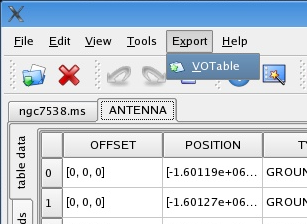
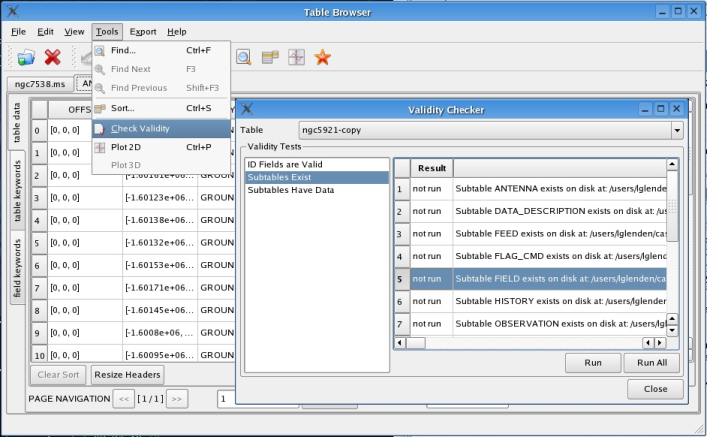

To export to a VOTable XML format, use the
Export - VOTable
command. You will then be able to choose the file to save to.
Since the export process can take a while, it is possible to hide
the progress in the background to continue using the CasaBrowser
for other tasks. When the export has completed, a message will be
displayed. If the CasaBrowser is closed while the export is still
in progress, the behavior is undefined. A warning will appear if
you attempt to close the CasaBrowser during an export.

[
top ||
home ]
Any test that extends a certain code interface can be used to
check the validity of opened tables. Currently, three tests exist
for CASA tables:
- ID Fields are valid: fields that end in _ID
tend to have a special meaning in CASA tables in that they refer to
a row in a subtable that is located in the table keywords. (For
example, a field called ARRAY_ID might refer to an
ARRAY subtable.) This test checks if fields ending in
_ID have corresponding values in the table keywords.
- Subtables exist: This test checks if subtables referenced
in the table keywords exist on disk where the value says they should
be.
- Subtables have data: This test checks if subtables
referenced in the table keywords can be opened and have at least
one row of data in them.

[
top ||
home ]
The following keyboard shortcuts are available:
- Ctrl+O: Open table.
- Ctrl+Shift+O: Open TaQL table.
- Ctrl+W: Close currently selected table.
Ctrl+A: Close all opened tables.
- Ctrl+Z: Undo last action.
Ctrl+Y, Ctrl+Shift+Z: Redo last undone
action.
- Ctrl+E: Enable editing mode for currently selected
table.
- Ctrl+I: Show table information.
- Ctrl+P: Open plotter.
- Ctrl+F: Find.
F3: Find next.
Shift+F3: Find previous.
- Ctrl+Shift+F: Filter on fields.
Ctrl+Shift+C: Clear current filter.
- Ctrl+S: Sort.
- Ctrl+H: Open help.
- Ctrl+Q: Quit.
- Ctrl+Shift+Q: Close All and Quit.
[
top ||
home ]